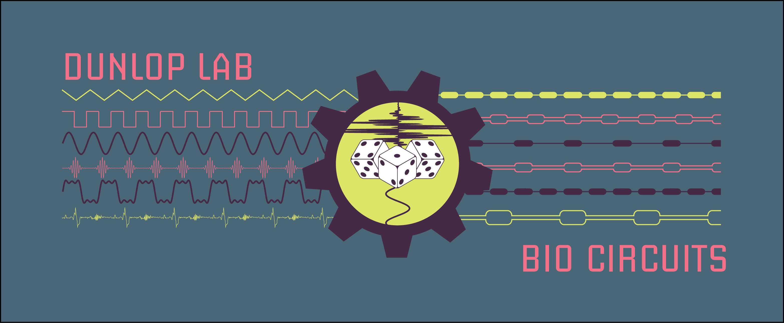
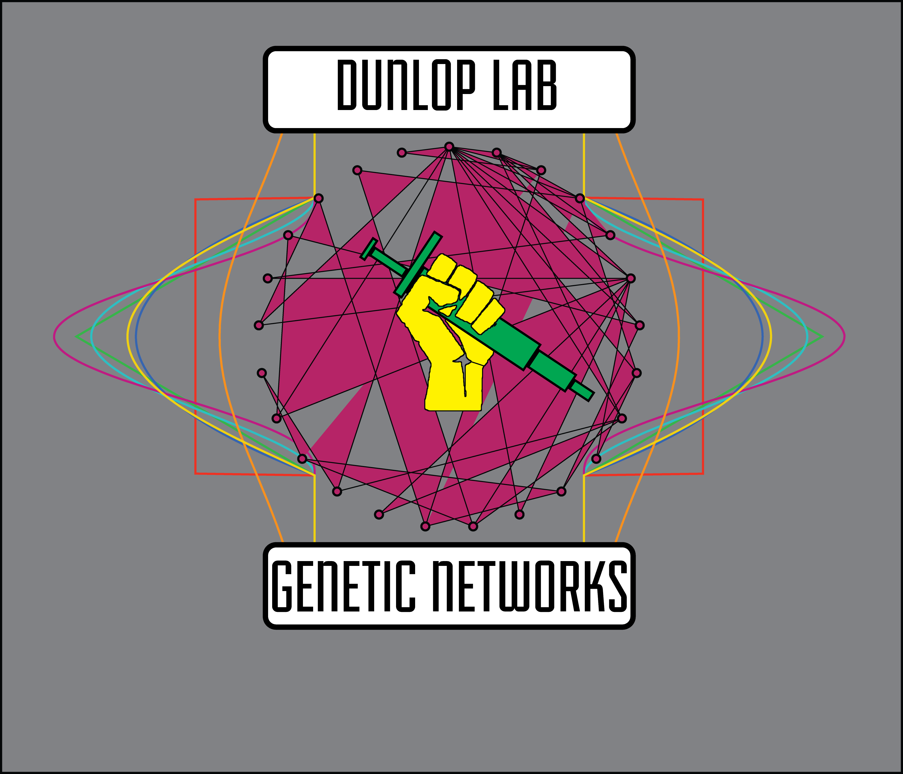

I've made a few designs over the years, here are some of them:
First Biocircuits Design

Computational Biology Workshop

Control Theory Markup

Genetic Networks

Dunlop Lab tshirt Gen 1

Dunlop Lab tshirt Gen 2

Cold Spring Harbor Synthetic Biology Summer Course